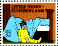

Instrumental composition.
Jerry Robinson's The Comics: an Illustrated History of Comic Strip Art has the following to say about the strip:
"A world of magic, dreams, and whimsy, enhanced by a superb craftmanship that some think has not been equaled in the comics since, appeared in 1905: Little Nemo in Slumberland by Winsor McCay. Each of Nemo's weekly adventures was a story of the dream of a tousle-haired boy of about six that concluded with his waking up or falling out of bed (reminiscent of the back-to-reality ending of Alice's Adventures in Wonderland). His dream world was peopled by Flip, a green-faced clown in a plug hat and ermine-collared jacket; a cannibal; a certain Dr. Pill; and a vast array of giants, animals, space creatures, queens, princesses, and policemen. There were sky bombs, wild train and dirigible rides, exotic parades, bizarre circuses, and festivities of all kinds in Byzantine settings and rococo landscapes." (p. 35)

The US Post Office included it in its set of comics stamps issued in 1995.Image © US Post Office, 1995.